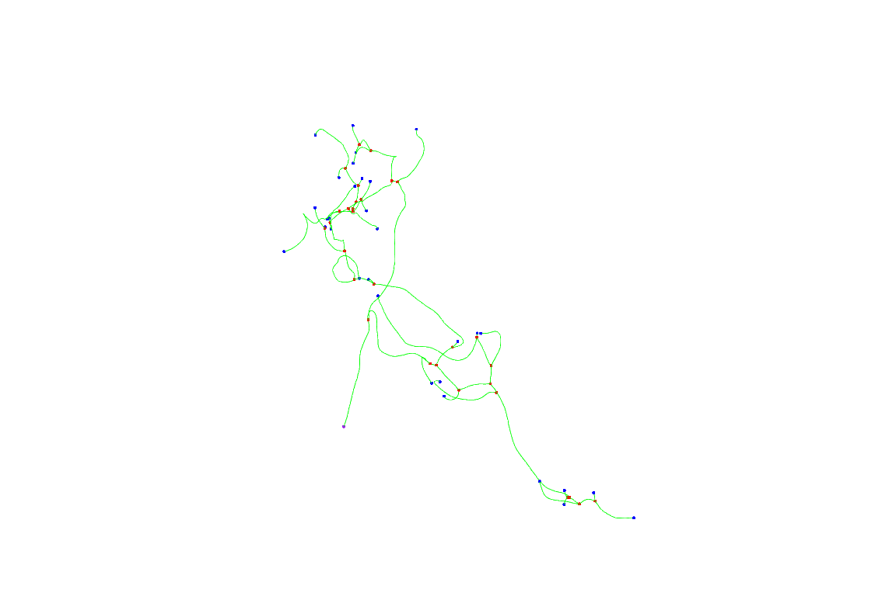
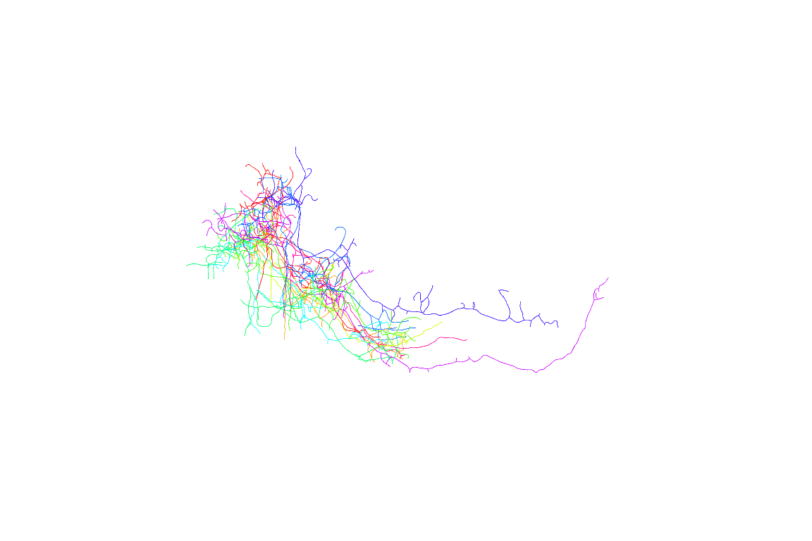
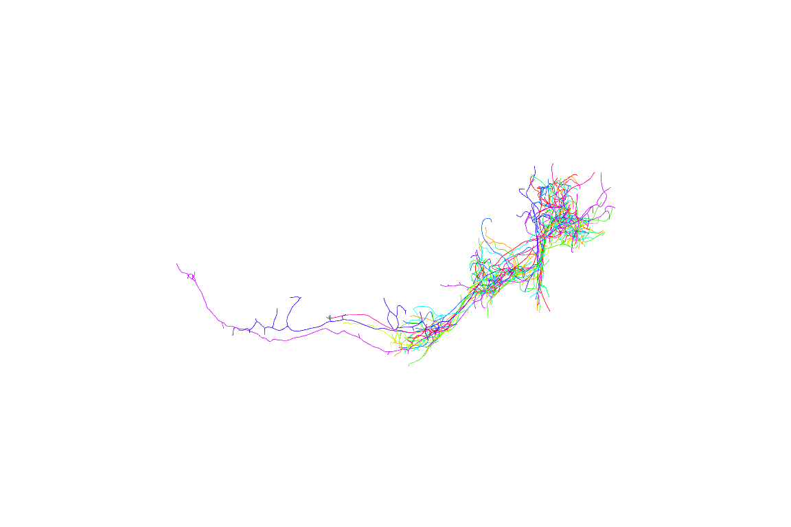
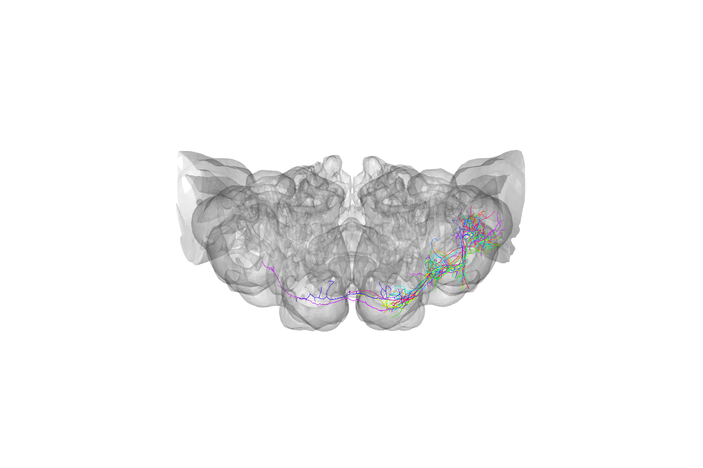
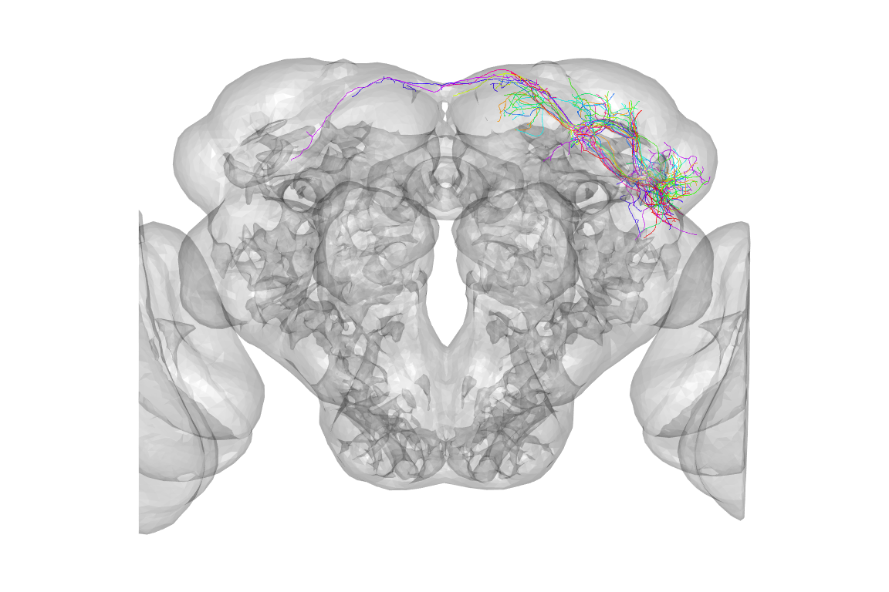
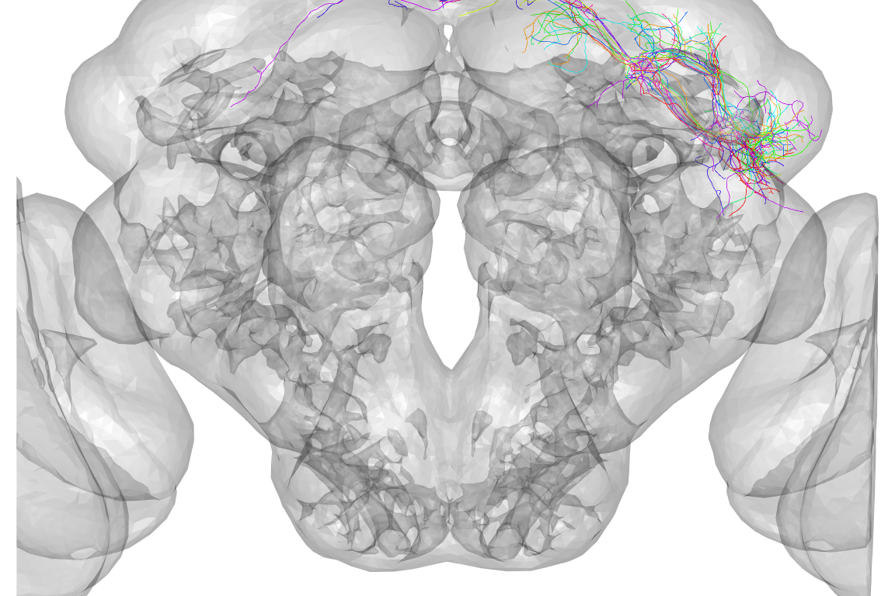
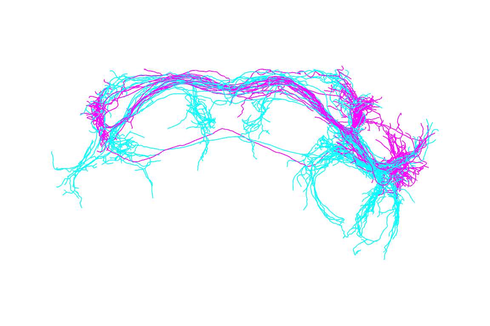
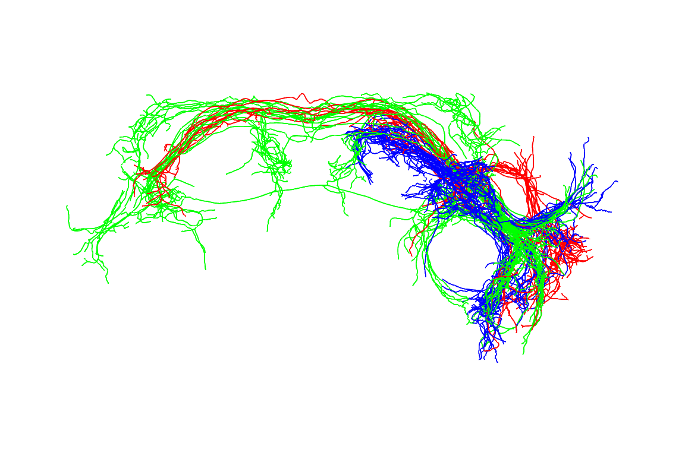

neuronsmd.RmdThis vignette shows some examples of how to use neuronal tracings in combination with GJ’s nat (NeuroAnatomy Toolbox) R package to analyse the structure of lateral horn neurons in this study.
Before running this vignette, it is necessary to install an R package nat (NeuroAnatomy Toolbox). This will have happened if you installed the frulhns package. There are instructions at , but the quickest method is to run the following code in an interactive session:
Now we can start a fresh R session, load required libraries and get to work
Let’s start by plotting a single neuron before registration

First 10 neurons

Now looking at multiple neurons before registration doesn’t make much sense, so let’s try again using the registered neurons

We can already see that those neurons are more tightly distributed. However it’s not really too clear how they relate to the structure of the brain. Let’s define a quick function to plot a brain surface.
#' Use rgl to plot a 3d surface of the brain
#'
#' @param alpha Alpha value for surface
#' @param col Colour of surface
#' @param ... Additional parameters passed to \code{plot3dsurface}
#' @export
#' @examples
#' @seealso \code{plot3dsurface} in \code{AnalysisSuite} code bundle.
#' is2surf()
#' is2surf(alpha=0.4,col='cyan')
is2surf <- function(alpha = 0.2, col = 'grey', ...) {
plot3d(IS2Surf, "Exterior", col = col, alpha = alpha, ...)
}Now we can use that to provide some context:

The default view is a actually a dorsal one, that is looking down the dorso-ventral axis onto the dorsal surface of the brain. People are actually more used to looking at a frontal view, but we can use the utility function to help plot the same data in a more conventional view:

is2surf()
plot3d(jkn[1:10], col = rainbow, WithNodes = FALSE)
# Hmm, let's zoom in a bit, notice that zoom values
# get smaller as you zoom in (see ?nview3d for details)
nview3d("frontal", zoom = 0.5)
OK, now let’s look at a particular set of lateral horn neurons: wild type aSP-g. We can use the attached to the to select which neurons to plot and how to colour them.
plot3d(jkn,
subset=cluster=="aSP-g" & shortGenotype=="JK1029",
col=sex, colpal=c(male='cyan',female='magenta'),
WithNodes=FALSE,lwd=2)
nview3d("frontal", zoom=0.7)
The distinction between male and female neurons is clear with several regions that are exclusively innervated by male or female arbours.
Similarly let’s look at all the neurons recored from the wildtype JK1029-Gal4 male flies.
plotresult=plot3d(jkn, subset=shortGenotype=="JK1029" & sex=="male",
col=cluster,WithNodes=FALSE,lwd=2)
nview3d("frontal", zoom=0.7)
# note that plotresult includes a useful dataframe as an attribute
# with details about the selected neurons
head(attr(plotresult,'df'))
#> X4ol aac amplitude..mV. ben bty cit
#> 120308-JK1029fill NA NA NA NA NA
#> 120417-JK1029fill NA NA NA NA NA
#> 120418-2JK1029fill NA NA NA NA NA
#> 120420-JK1029fill NA NA NA NA NA
#> 120421-1JK1029fill NA NA NA NA NA
#> 120421-4JK1029fill NA NA NA NA NA
#> cluster
#> 120308-JK1029fill aSP-f
#> 120417-JK1029fill aSP-f
#> 120418-2JK1029fill aSP-f
#> 120420-JK1029fill aSP-f
#> 120421-1JK1029fill aSP-h
#> 120421-4JK1029fill aSP-f
#> comments
#> 120308-JK1029fill
#> 120417-JK1029fill pressure responses (clogged duckbill valve in blank) \vsweeps _026-_032 used to be _000 - _006 from nm20120417c1 (merged)
#> 120418-2JK1029fill
#> 120420-JK1029fill interesting b/c this is an aSP-f that avoids the LH and is NOT cVA responsive!
#> 120421-1JK1029fill
#> 120421-4JK1029fill inhibited by cVA+odors+oil
#> coupling ctr cVA cVA.responsive ehb
#> 120308-JK1029fill NA NA NA
#> 120417-JK1029fill NA NA NA
#> 120418-2JK1029fill NA NA NA
#> 120420-JK1029fill NO NA NA NA
#> 120421-1JK1029fill NO NA NA YES NA
#> 120421-4JK1029fill NA NA NA
#> EPSPs eta far field fill.quality
#> 120308-JK1029fill NA NA 2
#> 120417-JK1029fill NA NA NA
#> 120418-2JK1029fill NA NA 2
#> 120420-JK1029fill NA NA 2
#> 120421-1JK1029fill NA NA 1
#> 120421-4JK1029fill NA NA 3
#> fly general.odor.responsive
#> 120308-JK1029fill NA
#> 120417-JK1029fill NA
#> 120418-2JK1029fill NA
#> 120420-JK1029fill NA
#> 120421-1JK1029fill NA YES
#> 120421-4JK1029fill NA
#> genotype ger hxa
#> 120308-JK1029fill CD8/+;CD8/+;JK1029,ChaDBD/+ NA NA
#> 120417-JK1029fill CD8/+;CD8/+;JK1029,ChaDBD/+ NA NA
#> 120418-2JK1029fill CD8/+;CD8/+;JK1029,ChaDBD/+ NA NA
#> 120420-JK1029fill CD8/+;CD8/+;JK1029,ChaDBD/+ NA NA
#> 120421-1JK1029fill CD8/+;CD8/+;JK1029,ChaDBD/+ NA NA
#> 120421-4JK1029fill CD8/+;CD8/+;JK1029,ChaDBD/+ NA NA
#> hxe iaa Igor.file Ihold..pA.
#> 120308-JK1029fill NA NA nm20120308c0
#> 120417-JK1029fill NA NA nm20120417c0
#> 120418-2JK1029fill NA NA nm20120418c0
#> 120420-JK1029fill NA NA nm20120420c1
#> 120421-1JK1029fill NA NA nm20120423c0
#> 120421-4JK1029fill NA NA nm20120423c4
#> IPSPs lin met oen pac PID pra pro
#> 120308-JK1029fill NA NA NA NA NA NA
#> 120417-JK1029fill NA NA NA NA NA NA
#> 120418-2JK1029fill NA NA NA NA NA NA
#> 120420-JK1029fill NA NA NA NA NA NA
#> 120421-1JK1029fill NA NA NA NA NA NA
#> 120421-4JK1029fill NA NA NA NA NA NA
#> recording.time..min. registered
#> 120308-JK1029fill YES
#> 120417-JK1029fill YES
#> 120418-2JK1029fill YES
#> 120420-JK1029fill YES
#> 120421-1JK1029fill YES
#> 120421-4JK1029fill YES
#> registration.path Ri..GOhm.
#> 120308-JK1029fill
#> 120417-JK1029fill
#> 120418-2JK1029fill
#> 120420-JK1029fill
#> 120421-1JK1029fill
#> 120421-4JK1029fill
#> Rs..MOhm. sex soma.location
#> 120308-JK1029fill male
#> 120417-JK1029fill male
#> 120418-2JK1029fill male
#> 120420-JK1029fill male
#> 120421-1JK1029fill male
#> 120421-4JK1029fill male
#> stack to traced type
#> 120308-JK1029fill 120308-JK1029fill YES fru+
#> 120417-JK1029fill 120417-JK1029fill YES fru+
#> 120418-2JK1029fill 120418-2JK1029fill YES fru+
#> 120420-JK1029fill 120420-JK1029fill YES fru+
#> 120421-1JK1029fill 120421-1JK1029fill YES fru+
#> 120421-4JK1029fill 120421-4JK1029fill YES fru+
#> useful vin Vm..mV.
#> 120308-JK1029fill 1 NA
#> 120417-JK1029fill 1 NA
#> 120418-2JK1029fill 1 NA
#> 120420-JK1029fill 1 NA
#> 120421-1JK1029fill 1 NA
#> 120421-4JK1029fill 1 NA
#> shortName
#> 120308-JK1029fill aSP-f1_M_JK1029_120308-JK1029fill
#> 120417-JK1029fill aSP-f4_M_JK1029_120417-JK1029fill
#> 120418-2JK1029fill aSP-f1_M_JK1029_120418-2JK1029fill
#> 120420-JK1029fill aSP-f_M_JK1029_120420-JK1029fill
#> 120421-1JK1029fill aSP-h_M_JK1029_120421-1JK1029fill
#> 120421-4JK1029fill aSP-f_M_JK1029_120421-4JK1029fill
#> shortGenotype shortSex class driver
#> 120308-JK1029fill JK1029 M 1 JK1029
#> 120417-JK1029fill JK1029 M 4 JK1029
#> 120418-2JK1029fill JK1029 M 1 JK1029
#> 120420-JK1029fill JK1029 M JK1029
#> 120421-1JK1029fill JK1029 M JK1029
#> 120421-4JK1029fill JK1029 M JK1029
#> col
#> 120308-JK1029fill #FF0000FF
#> 120417-JK1029fill #FF0000FF
#> 120418-2JK1029fill #FF0000FF
#> 120420-JK1029fill #FF0000FF
#> 120421-1JK1029fill #0000FFFF
#> 120421-4JK1029fill #FF0000FF
There are 3 clusters. The cell bodies for aSP-f (red) are more dorsal whereas those for aSP-g and aSP-h (green, blue) are more lateral and not obviously separable.